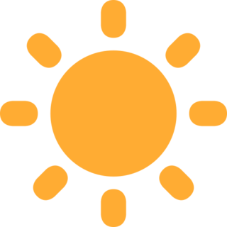

#enikprandhaaanu:)
nigak chelpam thoonum same here:(

thee
koyine porikaanum + chudaanum
thee iland nml nthaakanapa , manushiyan thee kandupudichoondale onu ippo ethrem belthayath.

veli
veli ndekile nere kaanan kayoou
oo pinne namlk kanu maathrm mathiyoo ,kanu kaananel veli bende,nee alaiochook....

sneham
koyine ninte frndsinum kodkpaa.
chengaayimark kodkaathe eganepa nee koyine porich thenune.....(single pasange BGM)